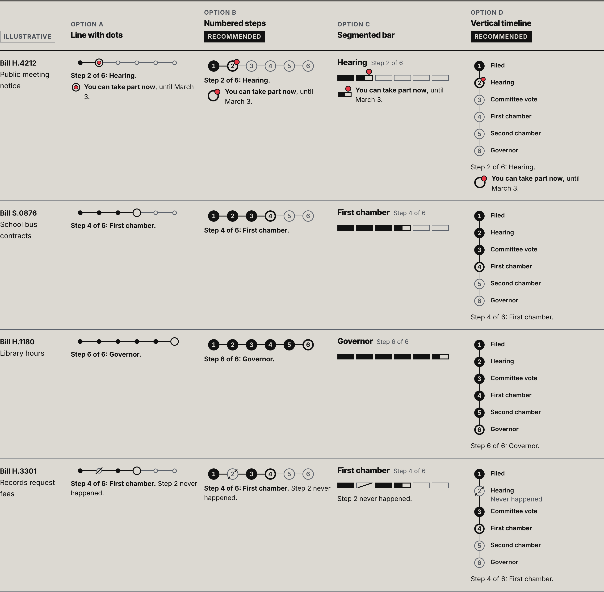
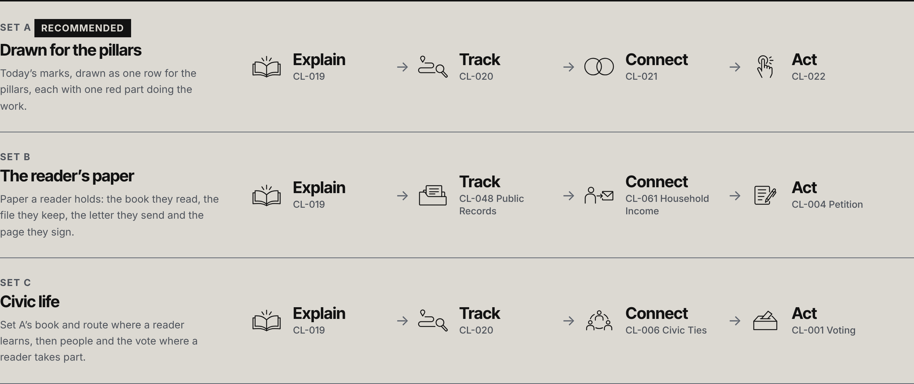
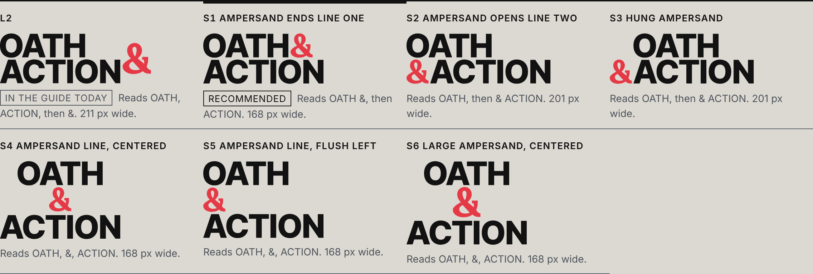
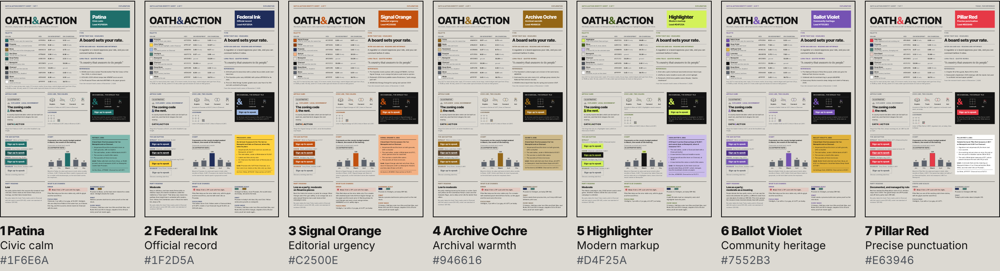

For Dustin Cathcart · November 7, 2026
Four explorations, for your pick
You asked for a simpler bill tracker, a few thoughts on the pillar icons, more stacked lockups and six color schemes. Each one is here with our recommendation, and seven questions close the page.
What you are asked
- Read the verdict, then the four sections. Each one sets its lead comparison at true size above our recommendation.
- Open a section’s full page to see every option at every size. A link at the top of each page brings you back here.
- Answer B6-1 to B6-7 on the cards, or send the sample reply if every recommendation suits you.
A reply can be this short:
B6-1 to B6-7: as recommended.
Verdict
Pick numbered steps, Set A and stacked S1, and keep Pillar Red.
Each section page is built from the approved masters and passes its accessibility check. My first review found three faults the checks could not see, and the makers have fixed all three. I confirmed each fix on the pages at desktop and phone widths. Step 6 is now Governor, so a bill waiting for a signature reads as waiting. The current pillar’s word is underlined at every size in all three sets. The color page states the full cost of a new lead color.
On color I part with the color designer. Patina is the best of the six sheets. Red gives Act its urgency and stays clear of Stone for color-blind readers, under rules the guide already follows. The reader check you approved can tell us whether readers see red as partisan before anything changes.
Each score below is the lowest any of the four sections earns. Craft stays at 3 until the pillar icons have small drawings of their own.
The six criteria
The creative director scores each criterion from 1 to 5 on the brief’s rubric. In each row of squares, the upright rule after the third square marks the ship line of 4.
- Craft3of 5The pillar icons have no drawings made for 16 and 24 px, where their line falls under half a pixel; the stacked lockups hold at twice size.
- Clarity4of 5Every tracker step names what is happening, and a signed bill reads “Became law on” with its date.
- Brand fidelity4of 5Each view keeps one working red with none on Prussian, and the stacks redraw no letter.
- Usefulness4of 5Sizes, states, files and minimums sit on every page; two sections disagree about kickers until you answer B6-5.
- Evidence honesty4of 5The color page now states what a new lead costs, and every invented bill and figure carries its label.
- Accessibility4of 5Every state reads by shape and words, and the current pillar’s word is underlined at every size.
The four recommendations
Section 1, Bill tracker
We recommend
Numbered steps, and a timeline on a bill’s page
Section 2, Pillar icons
We recommend
Set A, each icon with its word
Section 3, Stacked lockups
We recommend
S1, ampersand ends line one
Section 4, Color sheets
We recommend
Keep Pillar Red
Section 1 of 4
1 The grid keeps one job, and a simpler bill tracker
“a bill tracker should be much simpler, like a line with dots or a 1, 2, 3, 4, 5, 6 step process. That grid system’s not clear. I want everything to be clear.”
What we made
The systems designer proposes six plain steps in place of the nine stages and draws four trackers with them in your four-bill list, at phone and desktop widths, on Newsprint and on Charcoal. Each state shows by its shape and in words, and “You can take part now” carries the view’s one working red.
The page ends with the grid’s one job. The lockmark keeps four fixed places, and every grid that coded something retires.
I checked every state in grayscale, and each one holds by its shape. Step 5 should still say that the second chamber may hold its own hearing, since readers can take part there too.
Wider than this window. Scroll inside the frame to see all of it.

Captured from the section page in a 1,440 px window on November 7, 2026 at 2:12 a.m. UTC. Open the full bill tracker page to see every option and its sizes.
We recommend
Use numbered steps in lists and on story cards and the same steps as a timeline on a bill’s own page.
Why
A reader can say “step 2 of 6” without a key, and the marks hold up on a phone and in gray print. Step 6 is Governor, so the tracker says who acts next, and once the governor signs it prints “Became law on” with the date.
Decisions for you
- B6-1 Do the nine tracker stages become six plain steps?
- B6-2 Which trackers do we build?
- B6-3 Does the lockmark keep four fixed places, with every other use of the grid retired?
- B6-5 Does a pillar icon go in a kicker, with the content label counting as the pillar’s word?
Open the full bill tracker page
The page: Six plain steps for the bill tracker, and one job for the grid
The section page’s own check, run on November 7, 2026 at 2:05 a.m. UTC, passed at 1,440, 390 and 360 px.
Section 2 of 4
2 Four pillar icons from the Civic Line set
“revisit the civic icons. I’d like to use those and maybe see just a few thoughts on the four icons for the four pillars.”
What we made
The icon designer read all 122 Civic Line drawings and proposes three sets of four. Set A keeps the four drawn for the pillars. Set B uses paper a reader holds, and Set C turns to people and the vote for Connect and Act.
Each set appears at 16, 24, 48 and 128 px, in the pillar row, on a section opener, in a kicker and as a tile on Charcoal, with a naming test the studio ran on its own.
The four icons still need small drawings of their own at 16 and 24 px, where today’s line falls under half a pixel wide.
Wider than this window. Scroll inside the frame to see all of it.

Captured from the section page in a 1,440 px window on November 7, 2026 at 2:12 a.m. UTC. Open the full pillar icons page to see every option and its sizes.
We recommend
Keep Set A, with each word beside its icon and the current pillar’s word underlined at every size.
Why
Only these four were drawn for the pillars, so no topic page shares them. The underline marks the current pillar for every reader, and from 48 px up its icon keeps its red as a second sign.
Decisions for you
- B6-4 Which four icons stand for the pillars?
- B6-5 Does a pillar icon go in a kicker, with the content label counting as the pillar’s word?
Open the full pillar icons page
The page: Four pillar icons from the Civic Line
The section page’s own check, run on November 7, 2026 at 2:04 a.m. UTC, passed at 1,440, 390 and 360 px.
Section 3 of 4
3 More stacked lockups
“I don’t know that I like that. Can you give me a few more variations of stacked?”
What we made
The identity designer arranged six stacked lockups from the approved masters and set each beside today’s L2. Every letter matches its master point for point, as the designer’s script and a second check of my own both found.
Each option appears at two sizes, on Newsprint, Charcoal and Prussian, in an avatar tile and on a poster corner, with its clear space and minimum size.
If S6 appeals to you, say so. It would tell us the large ampersand was fine and its place at the right was the trouble.
Wider than this window. Scroll inside the frame to see all of it.

Captured from the section page in a 1,440 px window on November 7, 2026 at 2:12 a.m. UTC. Open the full stacked lockups page to see every option and its sizes.
We recommend
S1 replaces L2: OATH & over ACTION, flush left.
Why
It is the wordmark split after the ampersand, so it reads in the name’s order. It fits the smallest box of the six and gives the largest capitals in a round avatar, 49 px against L2’s 43 px.
Decisions for you
Open the full stacked lockups page
The page: More stacked lockups
The section page’s own check, run on November 7, 2026 at 1:46 a.m. UTC, passed at 1,440, 390 and 360 px.
Section 4 of 4
4 Six identity sheets in six color schemes
“I want to see, if red wasn’t at the forefront, what other colors would work.”
What we made
The research lead studied color at editorial, news and civic brands and how lead colors read for party. The color designer then built six one-page identity sheets, each led by a color other than red, and today’s palette at the same size.
Every sheet keeps Newsprint, Charcoal, the three typefaces and the approved marks, and measures every color pair it prints.
Federal Ink and Highlighter change how the ampersand reads: the first fades into the letters in gray, and the second changes color with its ground. I would take neither further.
Wider than this window. Scroll inside the frame to see all of it.

Captured from the section page in a 1,440 px window on November 7, 2026 at 2:12 a.m. UTC. Open the full color sheets page to see every option and its sizes.
We recommend
Keep Pillar Red as the lead, and ask readers how they read it for party in the reader check you already approved.
Why
The color designer recommends Patina, the strongest of the six, and the page now prints both views. Patina matches Stone in gray print and for many color-blind readers, and a new lead means rebuilding the color tokens, every two-color icon and chapters 03 to 05.
Decisions for you
Open the full color sheets page
The page: Six color schemes for Oath & Action, with today’s palette beside them
The section page’s own check, run on November 7, 2026 at 2:05 a.m. UTC, passed at 1,440, 390 and 360 px.
Decisions
Seven decisions wait for you, numbered B6-1 to B6-7. Each card gives the question, the options and our recommendation with its reason, and links to the place on a section page where you can see what it changes. Mark an answer on a card and it joins your reply at the end of this section.
-
B6-1. Do the nine tracker stages become six plain steps?
Six steps cover the same path in words a newcomer knows. Trackers name the step a bill is at now, so a bill waiting for a signature reads “Step 6 of 6: Governor”, and a signed bill reads “Became law on” with its date.
Options
- (a)Six steps: Filed, Hearing, Committee vote, First chamber, Second chamber, Governor Recommended
- (b)Keep the nine stages
We recommend (a) Six steps: Filed, Hearing, Committee vote, First chamber, Second chamber, Governor
Why Each step’s name stays true while a bill sits at it, and Governor tells a reader who acts next. Hearing keeps a step of its own, because the public is invited to speak there.
Where to look
-
B6-2. Which trackers do we build?
Options
- (a)Numbered steps in lists and on story cards, and the same steps as a vertical timeline on a bill’s own page Recommended
- (b)The segmented bar in lists, and the timeline on a bill’s page
- (c)The line with dots in lists, and the timeline on a bill’s page
- (d)The timeline everywhere
We recommend (a) Numbered steps in lists and on story cards, and the same steps as a vertical timeline on a bill’s own page
Why A number gives a reader words to say, “step 2 of 6”, with no key, and it holds up on a phone and in gray print. The timeline uses the same numbered marks and gives a bill’s page room for dates and the way to take part. On a phone the line with dots loses its step names, and its row of dots looks like the lockmark.
Where to look
-
B6-3. Does the lockmark keep four fixed places, with every other use of the grid retired?
The four places are the masthead, page headers, footers and the sign-off on cards, covers and posters. Tracker progress, series routes, pillar corners, coded grids and the grid in the kicker retire. The Signal Grid is part of the locked identity, so your answer is the named approval this change needs.
Options
- (a)Yes, four places, and chapter 08 becomes a short chapter called The lockmark Recommended
- (b)Yes, and the small lockmark in chart legends stays as a fifth place
- (c)Yes, and the lockmark joins the lockups in chapter 03, so chapter 08 closes and later chapters renumber
We recommend (a) Yes, four places, and chapter 08 becomes a short chapter called The lockmark
Why You asked for one use. A chart footer already holds the lockmark, so a legend mark adds a place with no new job. Keeping chapter 08’s number spares every later chapter its links and rule numbers.
Where to look
-
B6-4. Which four icons stand for the pillars?
Set A is today’s set. In every set the current pillar’s word is underlined at every size, and from 48 px up its icon also keeps its red.
Options
- (a)Set A, drawn for the pillars, with each word beside its icon Recommended
- (b)Set B, the reader’s paper
- (c)Set C, civic life
We recommend (a) Set A, drawn for the pillars, with each word beside its icon
Why Only Set A was drawn for the pillars. Sets B and C borrow drawings that already name topics, such as Voting and Public Records, so one drawing would carry two meanings, and a ballot or a petition narrows Act to one kind of step.
Where to look
-
B6-5. Does a pillar icon go in a kicker, with the content label counting as the pillar’s word?
A kicker is the short line above a headline, and it opens with one of seven content labels. The icon designer asks whether a label such as Guide can stand for Connect beside Connect’s icon.
Options
- (a)No: a kicker keeps its label and words, with a topic icon only beside the topic’s own word, and the pillar icons stay in the pillar row, on section openers and on tiles Recommended
- (b)Yes, and the content label counts as the pillar’s word
- (c)No, and a kicker carries no icon at all
We recommend (a) No: a kicker keeps its label and words, with a topic icon only beside the topic’s own word, and the pillar icons stay in the pillar row, on section openers and on tiles
Why Analysis, Report and Our position name no pillar, and Guide does not say Connect. A pillar icon in those kickers would code a pillar with no word beside it, the job you asked the grid to stop doing.
Where to look
-
B6-6. Which stacked lockup replaces L2?
L2 is today’s stacked lockup, OATH over ACTION with a large ampersand at the right. Every option is cut from the approved masters with no letter redrawn. A new lockup changes identity geometry, so your pick is the named approval it needs.
Options
- (a)S1: OATH & over ACTION, flush left Recommended
- (b)S4: OATH, the ampersand and ACTION on three centered lines
- (c)S6: S4 with a larger ampersand
- (d)S2, S3 or S5 (name it)
- (e)Keep L2
We recommend (a) S1: OATH & over ACTION, flush left
Why S1 is the wordmark split after the ampersand, so a reader who knows the masthead knows the stack. It reads in the name’s order, fits the smallest box and gives the largest capitals in a round avatar.
Where to look
-
B6-7. Does Pillar Red stay the lead color?
Pillar Red is locked, so a move needs your named approval with the old and the new side by side. Red has marked the Republican side of election maps since 2000, and the guide keeps it off Prussian and prints every party in Charcoal with its name.
A move replaces red in 12 color tokens, or nine if red stays as the error color, and in the 244 two-color Civic Line icon files and their 732 two-color tiles. Rules 05.3 and 05.5, which are written around red, change too, and chapters 03 to 05 and every identity proof are made again. Patina also moves the focus ring, the success check and the diverging scale. The color page states the same cost.
Options
- (a)Keep Pillar Red, and add how readers read it for party to the reader check you approved Recommended
- (b)Move to Patina, after the reader check and a press proof on newsprint, with the two side by side for your approval
- (c)Move to another of the six (name it), with the same steps first
We recommend (a) Keep Pillar Red, and add how readers read it for party to the reader check you approved
Why Red does its jobs under rules the guide already follows, and it gives Act its urgency. Patina passes on both grounds with no keyline and has no party reading the research found. It also matches Stone in gray print and for many color-blind readers, so a chart’s named bar would fade for them. Readers can tell us how they read red before anything changes.
Where to look
Your reply
The answers you mark above collect here, ready to paste into our chat. Your marks stay in this browser only. Until you mark one, the box holds a sample reply.
Studio record
What was asked
- Keep the grid to one use, on mastheads, headers and footers, and make the bill tracker much simpler, like a line with dots or a six-step process, because the grid is not clear.
- Revisit the Civic Line icons and show a few thoughts on the four icons for the four pillars.
- Show more variations of the stacked lockup, since the offset ampersand at the right of today’s L2 does not sit well.
- Make six one-page brand identity sheets in six different color schemes with different feels, after researching what is current in design, keeping Newsprint and the whole direction, to see what would work if red were not at the forefront.
- Roll with it, with no question round first.
How the work was done
- Makers
Four sections were built in parallel under one brief. The systems designer drew the tracker options and the lockmark’s places, and checked them for accessibility. The icon designer reviewed all 122 Civic Line icons and proposed three pillar sets. The identity designer arranged six stacked lockups from the approved masters, with a script confirming no letter was redrawn.
The research lead surveyed current color and design practice at editorial, news and civic brands, and how lead colors read for party, and proposed eight palette directions. The color designer built six identity sheets from six of them, plus today’s palette as a reference, measuring every text and mark pair against WCAG 2.2 AA.
- Creative director
The creative director reviewed every option at desktop and phone width, acted as the red team for contrast, color-only meaning, party reading and the use of approved masters, and wrote this board’s verdict, recommendations and decisions.
Checks run
| Check | Result |
|---|---|
Tracker sectionnode work/build/scripts/phase-2/dataviz_check.js work/boards/phase-2/board-6/tracker/20261107_Board-6-Tracker.html --board | Pass. 0 failures at 1440, 390 and 360 px, run by the main session. |
Pillar icons sectionnode work/build/scripts/phase-2/dataviz_check.js work/boards/phase-2/board-6/pillar-icons/20261107_Board-6-Pillar-Icons.html --board | Pass. 0 failures at 1440, 390 and 360 px, run by the main session. |
Stacked lockups sectionnode work/build/scripts/phase-2/dataviz_check.js work/boards/phase-2/board-6/stacked/20261107_Board-6-Stacked-Lockups.html --board | Pass. 0 failures at 1440, 390 and 360 px, run by the main session. |
Color sheets sectionnode work/build/scripts/phase-2/dataviz_check.js work/boards/phase-2/board-6/color-sheets/20261107_Board-6-Color-Sheets.html --board | Pass. 0 failures at 1440, 390 and 360 px, run by the main session. |
Checks the hub builder ran
- The builder captured four lead comparisons on November 7, 2026 at 2:12 a.m. UTC, each from its section page in a 1,440 px window at device scale 2, and shows each at its CSS size: bill tracker, 1,280 by 1,255 px; pillar icons, 1,248 by 525 px; stacked lockups, 1,136 by 384 px; color sheets, 1,280 by 348 px.
- It read each section page’s own check result: all four passed, each run on the page as it stands.
- Each place a decision points at exists on its section page.
- The hub prints no em dash and none of the words the writing rules flag.
- Its own styles use no red. The one red it draws is the wordmark’s ampersand in the masthead, marked as the signature; every other red sits inside a capture of a section page.
- Each section page is published as a copy with a link back to this hub added at its top. The pages in the repository are left as they are.
Not tested
- Real readers. The tracker options, the pillar icons and the stacked lockups have not been shown to anyone outside the studio; the icon designer’s naming test is the studio’s own judgment.
- Print. The color sheets were measured on screen only; no lead color has been proofed on newsprint or coated stock.
- Any real screen reader, and browsers other than Chromium.
- Party reading with real readers. The research memo’s party readings rest on published studies and examples, not a test of these sheets.
Change log
Paths are relative to oath-and-action-v6-brand-guide/.
Created
work/handoffs/phase-2/20261107_Board-6-Brief.mdwork/handoffs/phase-2/20261107_Color-And-Aesthetic-Research.mdwork/handoffs/phase-2/20261107_Board-6-Tracker-Notes.mdwork/handoffs/phase-2/20261107_Board-6-Pillar-Icons-Notes.mdwork/handoffs/phase-2/20261107_Board-6-Stacked-Notes.mdwork/handoffs/phase-2/20261107_Board-6-Color-Sheets-Notes.mdwork/handoffs/phase-2/20261107_Board-6-Builder-Notes.mdwork/handoffs/phase-2/20261107_CD-Review-Of-Board-6.md- work/boards/phase-2/board-6/ (four section pages, the stacked lockup SVGs, the board content and this record)
- work/build/scripts/phase-2/ (the Board 6 section builders, the hub builder and its capture helper)
work/boards/20261107_Board-6-Explorations.html
Modified
- work/ledger/20261020_Decision-Log.md (DR-104 to DR-107, D2-320 to D2-322)
Built November 7, 2026 at 2:12 a.m. UTC by work/build/scripts/phase-2/board6_hub_build.py, from the creative director’s content, the studio record and the four section pages as they stood then.